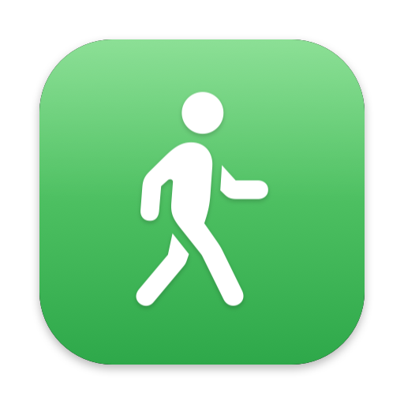
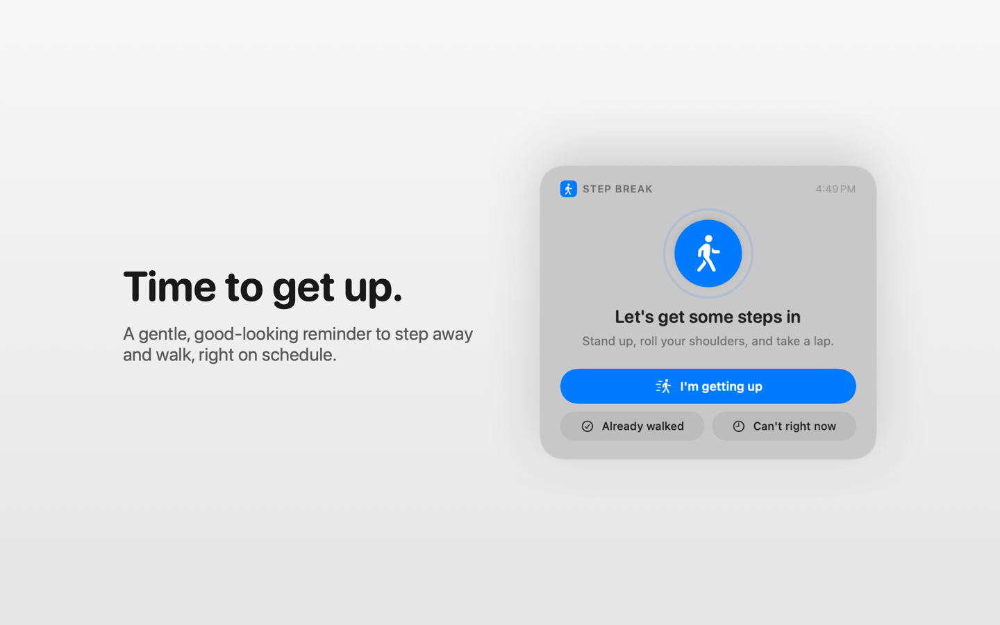

Step Break
A gentle reminder to get up and walk, on your schedule. Made for the Mac.
Download for MacFree · macOS 14 or later · Apple silicon & Intel
Beta: the first time you open it, go to System Settings → Privacy & Security and click Open Anyway.

- Install. Open the downloaded file and drag Step Break into Applications.
- Set your schedule. Open Step Break, pick your days, hours and how often, then press Start.
- Take your break. When a reminder appears, choose I'm getting up, Already walked, or Can't right now.
- Change settings. Click the walking figure in the menu bar to change settings, pause, or quit.